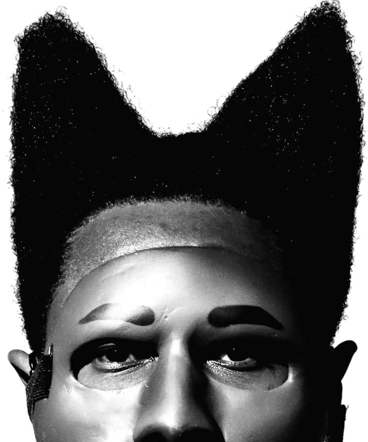

Tracklist de l'album CHROMAKOPIA
Tyler, The Creator
- St.Chroma (ft. Daniel Caesar) 3:17
- Rah Tah Tah 2:45
- Noid 4:44
- Darling, I (ft. Teezo Touchdown) 4:13
- Hey Jane 4:00
- I Killed You 2:48
- Judge Judy 4:29
- Sticky (ft. GloRilla, Sexyy Red & Lil Wayne) 4:15
- Take Your Mask Off (ft. Daniel Caesar & LaToiya Williams) 4:13
- Tomorrow 3:02
- Thought I Was Dead (ft. ScHoolboy Q & Santigold) 3:27
- Mother 4:40
- Like Him (ft. Lola Young) 4:39
- Balloon (ft. Doechii) 2:34
- I Hope You Find Your Way Home 4:29
Cliquez sur le nom de la musique pour avoir les paroles et sur le bouton sur la cover pour écouter un son aléatoire
